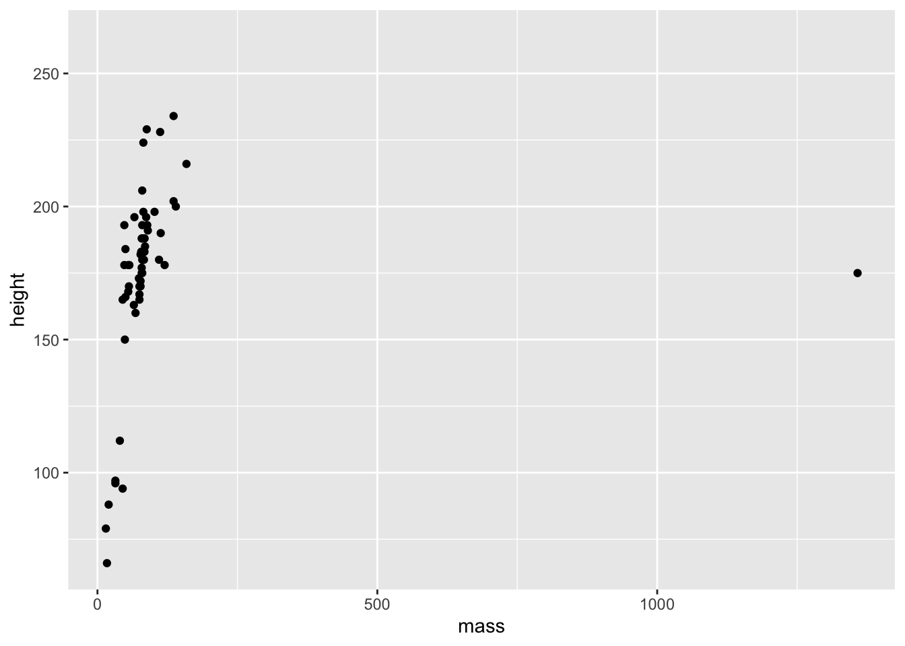

Chapter 2 Data Visualisation 1
In this session well look at data visualisation using the ggplot2 package (Wickham et al. 2021) from the tidyverse (Wickham 2021). As with most R stats courses, were focusing on data visualisation early on as this allows you to get a good grasp of your data and any general patterns within those data prior running any inferential tests.
Well follow Hadley Wickhams approach in R for Data Science by getting you working on producing some pretty graphs from the outset to see how ggplot() works. After that, well look at how ggplot can handle several data types. Along the way, well add some customisation to our graphs so you can see the flexibility of this package.
2.1 Getting Started
First, well load the packages necessary for this class. Nicely, ggplot2 is part of the tidyverse family, so we dont need to load this separately to the other packages in our library.
library(tidyverse)Sorry to have made you create your own data frames before, but R and its packages often come with in-built data sets. Well use the starwars data set from dplyr() which loaded with the tidyverse package. Why star wars? Its convenient, and Im a big nerd, so indulge me. Because this is built into R, you wont see it in your Data pane in the Global Environment. That doesnt matter for us, but rest assured it is there. Lets get a sense of how this data looks. How about printing the first 10 entries?
2.1.1 The Star Wars Tibble
# look at first 10 entries
starwars## # A tibble: 87 14
## name height mass hair_color skin_color eye_color birth_year sex gender homeworld
## <chr> <int> <dbl> <chr> <chr> <chr> <dbl> <chr> <chr> <chr>
## 1 Luke Sk 172 77 blond fair blue 19 male mascu Tatooine
## 2 C-3PO 167 75 <NA> gold yellow 112 none mascu Tatooine
## 3 R2-D2 96 32 <NA> white, bl red 33 none mascu Naboo
## 4 Darth V 202 136 none white yellow 41.9 male mascu Tatooine
## 5 Leia Or 150 49 brown light brown 19 fema femin Alderaan
## 6 Owen La 178 120 brown, gr light blue 52 male mascu Tatooine
## 7 Beru Wh 165 75 brown light blue 47 fema femin Tatooine
## 8 R5-D4 97 32 <NA> white, red red NA none mascu Tatooine
## 9 Biggs D 183 84 black light brown 24 male mascu Tatooine
## 10 Obi-Wan 182 77 auburn, w fair blue-gray 57 male mascu Stewjon
## # with 77 more rows, and 4 more variables: species <chr>, films <list>,
## # vehicles <list>, starships <list>I know that the starwars data set is saved as a tibble. That allowed me to just print its name to see the first 10 entries. But be wary of this with large data sets where you dont know how its stored. You dont want to flood your console if your data is stored as a data.frame!
Lets plot the mass and height of our characters against each other to see if theres a trend.
2.1.2 Plotting in ggplot2
ggplot(data = starwars) +
geom_point(mapping = aes(x = mass, y = height))## Warning: Removed 28 rows containing missing values (geom_point).
So, we can see just how easy it is to create a plot of points in ggplot. Well done! There seems to be a positive relationship between mass and height in the starwars data set. We also got a couple of surprises:
- A warning about 28 rows that contain missing values;
- A really big outlier.
First, well explore how ggplot works, then well look into these surprises.
The ggplot() function always needs to take a data set. This data set should hold everything you want to plot. Crucially, ggplot builds up the plots in layers. So making the first call ggplot(data = starwars) tells ggplot where it should look for data, but it doesnt do much else aside from making a grey background.
After this, you need to add some layers to your plot in the form of geometric objects (or geoms, for short). We decided that because we want to look at the link between mass and height, two continuous variables, that adding some points to the plot will be most useful for getting an idea of how the data are related. To do this, we used the geom_point() function. There are other geoms we could add, but for now well focus on points.
Crucially, geom functions take as an argument the mapping in your data. That is, how the visuals of the plot are mapped to your data. This mapping is always defined in terms of the aesthetics of your plot aes(), e.g.which variables to map onto the x and y axis, in this case.
You can see how this makes ggplot so flexible:
- Your data argument is flexible, so you can pass different data sets to the same chunk of code by changing out what you pass to the
data =argument. - Your aesthetics are flexible, so you can pass different columns to your x and y axis
- Your aesthetics are even more flexible because they can take aesthetics other than just what to plot on the x and y axes
Lets see the flexibility of your aesthetics in action.
2.1.3 Cleaning Before Plotting
We saw before that R gave us a warning that we have rows containing missing values. In this instance, this just means that 28 people werent plotted because they didnt have height and/or mass values. Ill save filtering data properly (and what the %>% (read pipe) symbol does) for another lesson, but well get rid of them for now by running this code, below:
filtered_starwars <- starwars %>%
drop_na(height, mass)2.1.4 Changing Your Aesthetics
Lets say were interested in showing the relationship between mass and height within genders. How can we do this? One way would be to add colour to our the points on the plot in order to highlight the different genders.
ggplot(data = filtered_starwars) +
geom_point(mapping = aes(x = mass,
y = height,
colour = gender
)
)We dont get that warning now that we removed the NAs and passed the filtered data as an argument. That wasnt really necessary as ggplot can handle that for us, but it stops the horrible warning from popping up!
Warnings in R are there to tell you that the output of your code may not contain what you wanted it to contain. In the previous plot, ggplot dropped those with missing heights and masses, even though we didnt explictly tell it to do so. Here, because we filtered those entried with missing values before plotting, we dont get a warning.
Warnings are different to errors in that your code will still work, but you need to check out whether it did what you wanted it to do. On the other hand, errors indicate you did something wrong and your code will fail to run.
Now, we now have colour to see the relationship between mass and height across the genders in the data set. But its a little difficult to see this relationship given the outlier. Lets see what that outlier is, and whether we should remove it from our data.
Again, youll learn how this filtering works in later lessons. But for now, I just want to show you how its useful to understand your data prior to creating a final plot of your data.
filtered_starwars %>% filter(mass > 1000)## # A tibble: 1 14
## name height mass hair_color skin_color eye_color birth_year sex gender homeworld
## <chr> <int> <dbl> <chr> <chr> <chr> <dbl> <chr> <chr> <chr>
## 1 Jabba De 175 1358 <NA> green-tan orange 600 herm mascu Nal Hutta
## # with 4 more variables: species <chr>, films <list>, vehicles <list>, starships <list># overwrite data to remove outlier (keep all with mass below 1000)
# filtered_starwars <- filtered_starwars %>% filter(mass < 1000) # not runOf course, its Jabba the Hutt. We could choose to throw Jabba out of our data by using the code above to overwrite the data (commented out), but for now, well see just how powerful ggplot is without throwing away our data.
ggplot(data = filtered_starwars) +
geom_point(mapping = aes(x = mass,
y = height,
colour = gender
)
) +
coord_cartesian(xlim = c(0, 180))This time we added a function coord_cartesian() to the end of our ggplot() call. We defined the limits of the x axis to be between 0 and 180. This way, we can get a better look at the trends in our data.
Why do we define limits inside this function? Well, we could have also manually defined the scale with scale_x_continuous(limits = c(0, 180)). This may seem more inuitive, but it throws out the data points outside the limits prior to plotting. Why is this a problem? ggplot has some nice functionalities such as drawing lines of best fit for you based on the data in the plot. If you throw data away while plotting, your line of best fit will shift. So, if you decide that you want to change your scale but keep your model fits for all data, use coord_cartesian().
Given this is an outlier, your choice doesnt matter if youre just trying to show trends like this, but your choice is important if you want to show any inferential statistics associated with the data.
Next up, well look at changing a few components of the points on the plot.
ggplot(data = filtered_starwars) +
geom_point(mapping = aes(x = mass,
y = height,
colour = gender
),
alpha = 0.7, # opacity
shape = 17, # triangles
size = 4) + # bigger points
coord_cartesian(xlim = c(0, 180))Weve added 3 variables outside of the aes() mapping. This means that all of the points within the plot are changed in the same way:
- They all become a little bit transparent through the
alphavariable definition; - They all take a triangle shape through the
shapevariable definition (and the number associated) - They are all the same size due to the
sizevariable definition.
If we put these variables within the aes() mappings and associated them with a variable within the data set, such as gender, then each point would be affected differently depending on which level of the gender factor the individual data points belong to. Its important to remember that everything within aes() is mapped onto variables with which to display your data. So, the x location, y location, and anything else that you define within aes() can vary by your data set. Everything outside of it will affect all levels of your data.
Here, well define colour both within and outside the aes() mapping, causing a clash. Try this plot below to see how clashes are resolved in ggplot:
ggplot(data = filtered_starwars) +
geom_point(mapping = aes(x = mass,
y = height,
colour = gender
),
colour = "red") +
coord_cartesian(xlim = c(0, 180))The different colours for each level of gender are now gone, along with the legend! Our variable definition for colour outside of the aes() mappings overrides that within aes(). This is because weve manually set the aesthetic properties of our plot by defining colour as an argument of the geom function, rather than of the aethetic mapping.
R has some built in shapes that we can define within our plots. For shapes, these are divided into three categories:
- Colour border with hollow fill (0 - 14)
- Colourless border with colour fill (15 - 18)
- Colour border with colour fill (21 - 24)
Bear in mind that colour and fill are different properties that we can control within our plots. Below, Ive used hex values to specify the exact colours that Id like for the colour (around the border) and the fill for our points. You can find a nice hex selector at htmlcolorcodes.com which will allow you to customise your plot colours to your liking. Just change the letters and numbers after the # in the colour call, and you can change the colours to your liking.
In the example below I chose my colours based on the diverging colourblind safe selection of colours from Color Brewer. Id recommend that you use this if youre going to include colour in any plots for papers/presentations.
ggplot(data = filtered_starwars, na.rm = T) +
geom_point(mapping = aes(x = mass,
y = height,
colour = gender
),
colour = "#af8dc3",
fill = "#7fbf7b",
shape = 21,
size = 8,
stroke = 3
) +
coord_cartesian(xlim = c(0, 180))Try to mess about with the different definitions that we provided above. Change the colour, size, and stroke values to see how these variables work.
Weve used the aesthetics above to define categorical data by colour. But what happens if we use continuous data?
ggplot(data = filtered_starwars, na.rm = T) +
geom_point(mapping = aes(x = mass,
y = height,
colour = birth_year
)
) +
coord_cartesian(xlim = c(0, 180))You can see that we get a sliding scale for the hue of the points. Pretty neat, but also quite difficult to get a real idea of where on the scale the points lie.
There are many inbuilt plots that you can create with ggplot2 by mapping your data to different geoms. To get an idea of all of different types of geoms, type ??geom. This should give you an index of all of the geom types available to ggplot2 in your Help pane of RStudio.
2.2 Exploring Different Geoms
Youve already learned about geom_point() above, but now well explore the other geom types.
For this exploration, well use a different data set with a limited number of groups for ease of visualisation. Ive simulated some data for this exercise. You can find this data in the inputs folder for this lesson. (If youre interested, you can also find the script for generating this data in the data_generation folder).
Lets load this data into R. Here, we use the function read_csv rather than the base R read.csv. This is because read_csv is faster, typically does a better job at guessing the data types for your columns of data, and saves the output as a tibble.
Note: read_csv will try to guess the types of data in each column for a data set loaded into R, but sometimes it can fail. Well cover instances where this fails, and how to remedy it, in the next lesson.
rt_data <- read_csv("inputs/rt_data.csv")How should we interpret this data? Imagine that we ran a lexical decision task on two groups of participants. In one condition, participants responded to sentences such as Eric turned down the volume, and had to indicate whether this sentence made sense by turning a knob. In the match condition, agreement matched the motion indicated in the sentence (e.g.left = yes, it makes sense), and in the mismatch condition agreement did not match the motion indicated in the sentence (e.g.right = yes, it makes sense). Zwaan and Taylor (2006, Experiment 4) hypothesised that when the action and response are matched, resposne times should be quicker than if they do not match.
The participant column indicates individual participants, the gender column indicates the gender of our participants, response_condition indicates whether participants took part in the match or mismatch conditions, and reaction_time, our dependent variable, represents the average reaction time in milliseconds for each participant to respond to whether or not the sentences made sense.
2.2.1 Bar Plots
Bar plots are one of the most common plots youll come across in Psychology. Theyre most useful for representing counts of data that are divided into categories. For example, you could use a bar plot to show the number of male and female participants in your study. Using our simulated data set, we can use a bar plot to show the counts of males and females in our data set.
ggplot(data = rt_data,
mapping = aes(x = gender)
) +
geom_bar()
Youll often find that psychologists like to plot continuous data in a bar plot. Ive done this myself, but we can do better. One alternative would be to use a boxplot, a violin plot, or even a pirate plot which well explore in the next lesson (well, we are plotting with Rrrrrrrrr).
Since weve got data which represents mean scores for each participant, this will be suitable for plotting straight away. If, however, you have raw data, remember to aggregate by participants or items prior to plotting. Well cover this in later classes.
2.2.2 Box Plots
Box plots provide a better way to represent continuous outcomes (such as reaction times) than bar plots as they give you more information about the variance within your data set.
2.2.2.1 How to read a box plot
- The middle line represents the median
- The upper white section of the box the upper quartile: 75% of scores fall below this.
- The lower white section the lower quartile: 25% of scores fall below this.
- Together the quartiles represent the interquartile range: The middle 50% of scores.
- The limits of the whiskers (black lines) for the upper and lower parts of the graph represent the smallest and largest observations that are equal to the upper or lower quartiles minus or plus 1.5 times the interquartile range. Effectively, this is most of the rest of the data, apart from outliers.
- The dots represent outliers (i.e.those values outside of the whiskers)
ggplot(data = rt_data,
mapping = aes(x = response_condition,
y = reaction_time
)
) +
geom_boxplot()We can see that the median reaction time is highest for those in the mismatch condition. Notice also that the interquartile range is larger, and so is the upper limit of the whiskers. This all suggests that those in the mismatch group vary more from each other than those in the match condition.
Also, notice the outlier in the match group. Someone obviously has a very slow reaction time compared to the rest of the cohort. I wonder why that could be? Perhaps its because they misinterpreted the instructions, accidentally putting themselves into the mismatch condition. Or, it could be because I simulated this data and didnt control for how outliers were distributed.
2.2.3 Violin Plots
Additionally, we have violin plots which show you the density of the mean scores. The wider the section of the violin, the more scores around that area. We set trim to FALSE within the violin plot so that we see the full tails of the data. If we set this to TRUE, then the tails are trimmed to the range of the data.
Its also useful to draw quantiles on the violin plot, so we can see the quantiles as with the box plot using draw_quantiles and by specifying where we want these quantiles. Here, we chose the upper and lower 25% and the interquartile range.
ggplot(data = rt_data,
mapping = aes(x = response_condition,
y = reaction_time
)
) +
geom_violin(
trim = FALSE,
draw_quantiles = c(0.25, 0.5, 0.75)
)2.2.4 Density Plots
Now well look at ways to check for the distribution of your continuous variables. This is a good way to get an eye for whether or not your data are skewed and require a transformation on the data, or a non-parametric test when it comes to inferential statistics. Again, well return to what this means in regards to statistics later in this course, but for now its a good idea to understand how you can check the distribution of your data prior to computing any statistics.
Weve added the additional argument fill to the aethetic mapping, to specify that we wanted different colours for our groups. We also specified the additional argument alpha in our density plot to specify that we wanted some opacity to the densities.
ggplot(data = rt_data,
mapping = aes(x = reaction_time,
fill = response_condition
)
) +
geom_density(alpha = 0.5) # alpha = opacity2.2.5 Histograms
If you have relatively few observations, a histogram may be more appropriate than a density plot. But, well just stick to the same data as before to see how this works.
Here, its often useful to set the binwidth prior to plotting. ggplot will try to set it to a default if it can, but this may not be what you want. Here, weve set the binwidth to 50, so we count how many observations we have for reaction times in 50ms bins, i.e.from 225 to 275ms, from 275 to 325ms etc. We also set the fill of the bars to white, and the colour to black so we get white bars with a black outline.
ggplot(data = rt_data, mapping = aes(x = reaction_time)) +
geom_histogram(binwidth = 50,
fill = "white",
colour = "black"
)2.3 Exercises
If thats not enough to make you fall asleep, try out the exercises below. Well cover these in the class with the solutions uploaded at the beginning of each session in a separate downloadable link. Try to solve these questions before resorting to the solutions. Ill be there to help out where necessary.
In this section, well use some new data from the pre-packaged data sets in R. First off, well load the chickwts data set, which looks at chicken weights by different feed types.
data(chickwts)2.3.1 Main Exercises
2.3.2 Question 1
Take a look at the first 6 rows of the data set. How does the data look? Is this appropriate for plotting?
2.3.3 Question 2
Calculate the overall means for the chick weights.
2.3.4 Question 3
Calculate the overall SD for the chick weights.
2.3.5 Question 4
Create the basis of a ggplot by defining the chickwts data as the data argument. Assign this all to the object chick_plot.
2.3.6 Question 5
Make a box plot of the chick weights by feed. To do this, use your chick_plot object and add the function for creating a boxplot.
2.3.7 Question 6
Add colour to your box plot by the feed type.
2.3.8 Question 7
Create a density distribution of the chick weights by feed type. Set different colours and fills by the feed type. To make all densities visible, set the transparency for all distributions to 0.4.
2.3.9 Question 8
Make a bar plot to show the counts of each feed type.
2.3.10 Question 9
Pick 6 hex colours from the Color Brewer website. Put these together in a variable, bar_colours. Create your bar plot again, but this time make the fill of the bars the same as those stored in bar_colours.
Why do we not get a legend when we specify colours this way, but we do if we specify colours as in Question 7?
Well return to adding colour to bars while keeping the legend labels in the next lesson.
2.3.11 Question 10
Make a histogram showing the overall distribution of the chick weights. Set the bin width to 50, and make the bars have a white fill and black border.
2.3.12 Additional Exercise
Make a point plot from a data set of your choosing. Check out the inbuilt data sets in R by typing data() in the console. Customise this plot to your liking.